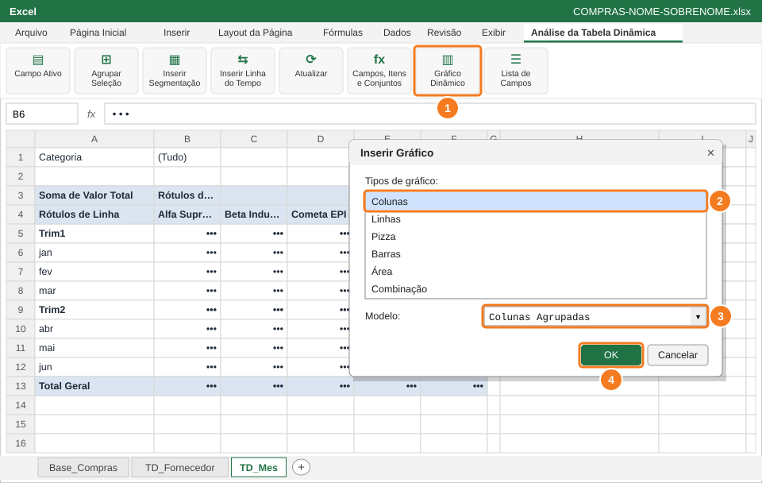
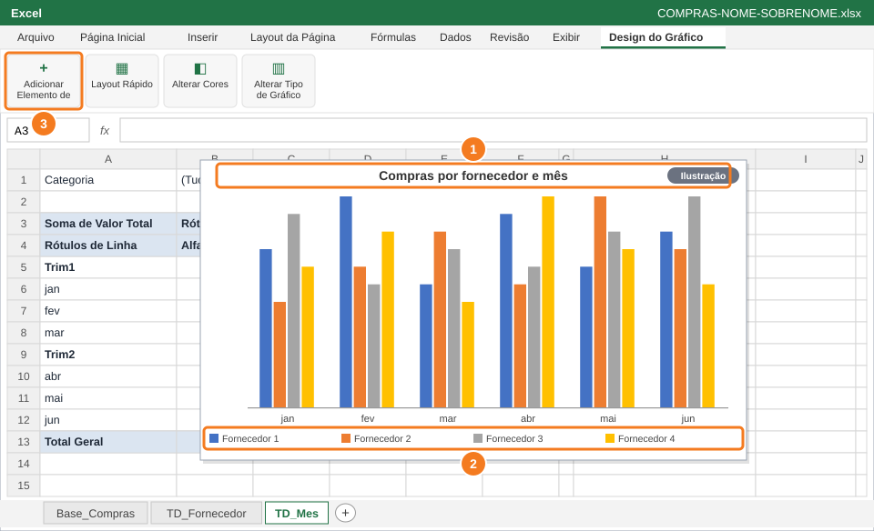
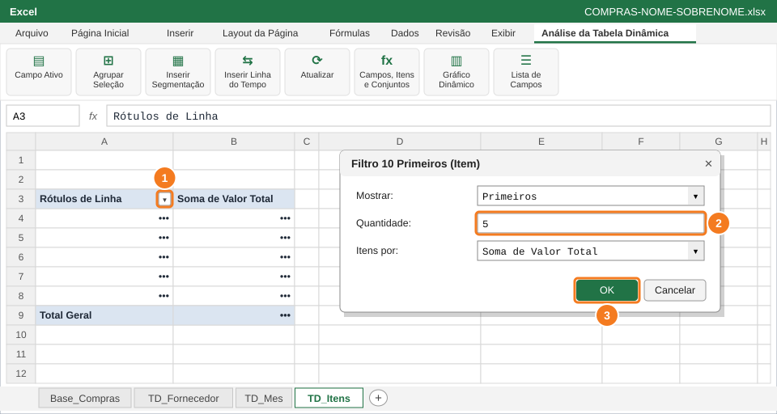
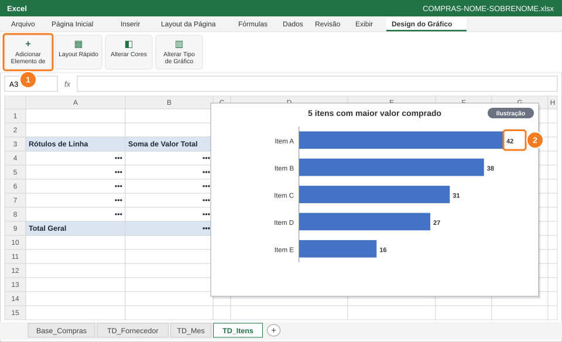
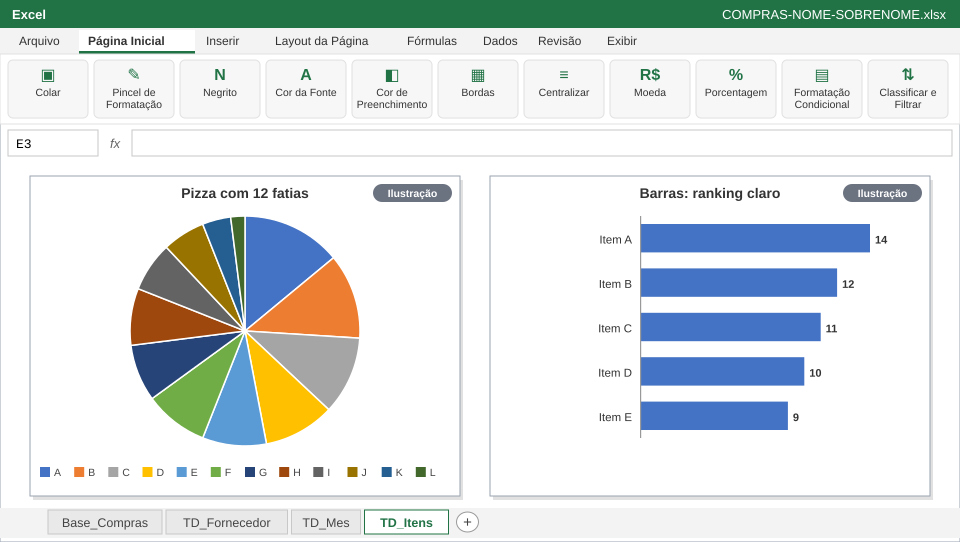

SENAI · Análise de Dados Aplicada à Gestão
Questão 4 — Gráficos dinâmicos
Atividade Prática de Excel — Análise de Compras com Tabelas Dinâmicas
Atividade prática avaliativa ⏱ 35 min 2,0 pontos 5 passos
Nome:
Turma:
Data: 01/10/2026
← Questão anterior 🏠 Capa da atividade 🖨️ Imprimir / PDF Próxima questão →
🎯 O que você vai fazer
Transformar as tabelas dinâmicas em gráficos dinâmicos limpos e escolher o tipo de gráfico certo para cada pergunta: comparar fornecedores mês a mês e mostrar o ranking dos itens que mais pesam no orçamento.
Você vai usar Gráfico Dinâmico: Colunas Agrupadas e Barras Adicionar Elemento de Gráfico (título, rótulos, linhas de grade, legenda) Filtro 10 Primeiros Regra: comparar → colunas/barras; tendência → linhas Aba de trabalho: TD_Mes e TD_Itens (nova) · Slides de apoio: Arquivo 6 — slides 25–29 e 35
⚠️ Atenção Os gráficos das imagens usam números de ilustração , não os da sua base. O seu gráfico vai ter outras alturas de coluna.
1
Crie um gráfico de colunas a partir da TD_Mes

Gráfico Dinâmico (1) → Colunas (2) → Colunas Agrupadas (3) → OK (4).
2
Deixe o gráfico limpo e com título

Título (1), legenda embaixo (2) e Adicionar Elemento de Gráfico (3).
3
Crie a TD_Itens com os 5 itens de maior valor

Setinha de Rótulos de Linha (1) → Filtros de Valores → 10 Primeiros: troque 10 por 5 (2) → OK (3).
4
Crie o gráfico de barras com rótulos de dados

Adicionar Elemento de Gráfico (1) → Rótulos de Dados: o valor aparece na ponta de cada barra (2).
5
Justifique a escolha do gráfico

Pizza com muitas fatias (esquerda) × barras (direita): qual se lê mais rápido?
📋 Como esta questão será avaliada
Critério Pontos Gráfico dinâmico de colunas agrupadas por mês e fornecedor 0,5 Gráfico limpo: título, legenda embaixo, sem 3D e sem grade 0,4 TD_Itens com os 5 maiores itens em gráfico de barras com rótulos 0,6 Justificativa da escolha do gráfico em E3 0,5 Total da questão 2,0
← Questão anterior 🏠 Capa da atividade 🖨️ Imprimir / PDF Próxima questão → Aprendizagem Industrial — Assistente em Processos de Gestão e Controle de Materiais · Análise de Dados Aplicada à Gestão · Empresa e dados fictícios, criados para fins didáticos.